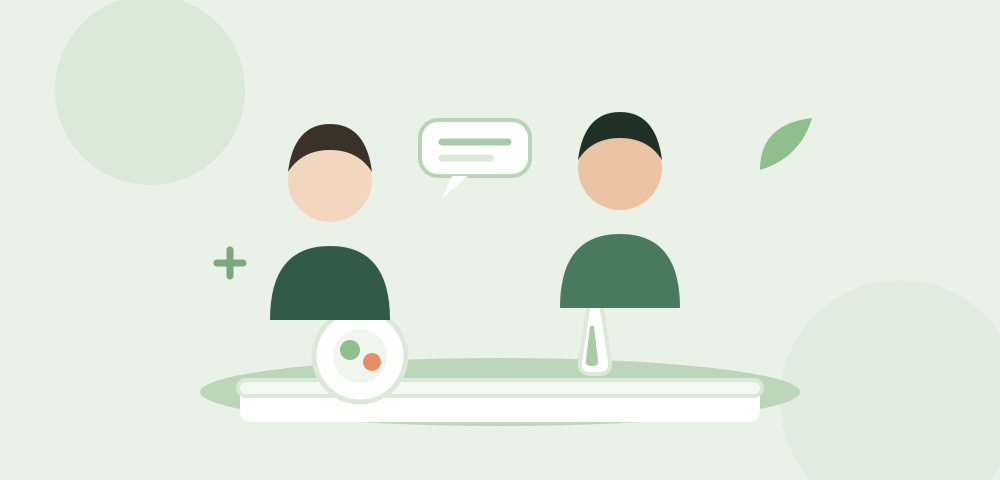

01مغطى من التأمينKassenleistung
استشارة غذائية علاجية
Ernährungstherapeutische Beratung
مرافقة غذائية مخصصة للحالات الصحية التي تحتاج تدخلاً متخصصاً.
Individuelle Begleitung bei Erkrankungen, die eine ernährungstherapeutische Unterstützung benötigen.
اعرف أكثرMehr erfahren←